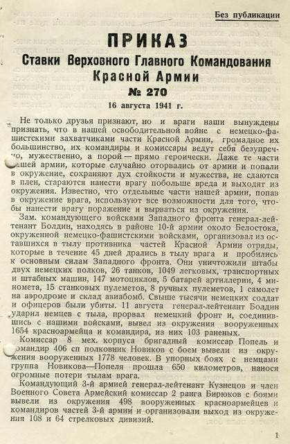
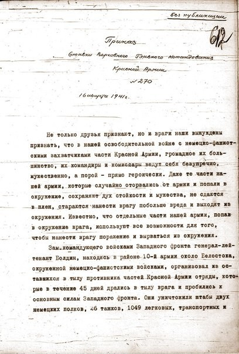
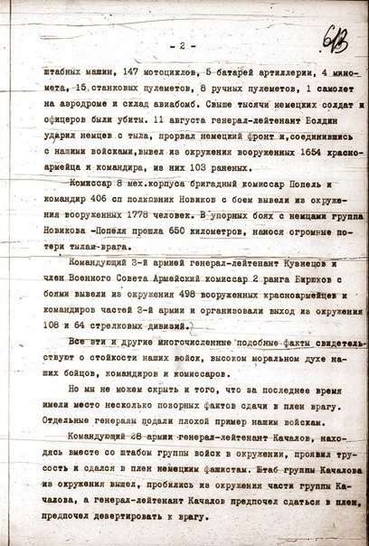
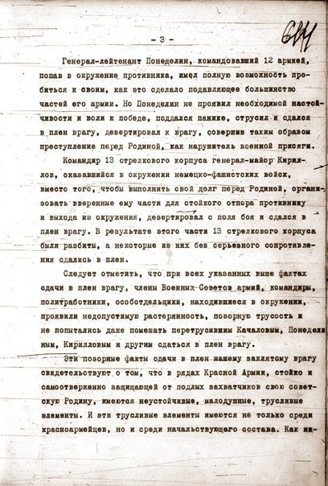
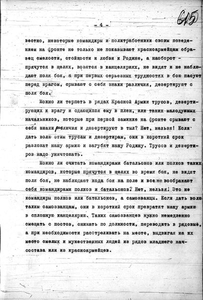
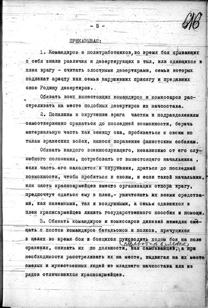
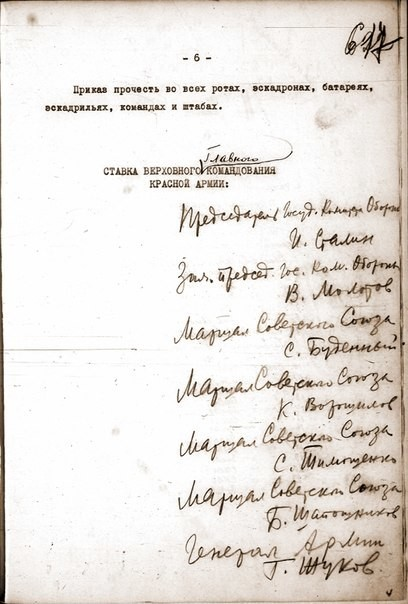

Під час Другої світової війни 5,7 млн бійців і командирів Червоної армії потрапили у німецький полон, з яких 3,3 млн загинули: померли від голоду, хвороб, важкої праці, були вбиті під час так званої селекції.
Величезні втрати серед полонених з Радянського Союзу (57 %) та їх складна повоєнна доля зумовлені ідеологічним характером війни. Гітлер розглядав війну проти СРСР як расово-ідеологічну, що вимагала жорстокого ведення, свідомого ігнорування норм воєнного міжнародного права.
Навіть на німецьких пропагандистських фото радянських військовополонених зображали як не схожих на людей.
Титульна сторінка журналу для військовослужбовців Вермахту «Сигнал» з пропагандистським фото не схожих на людину радянських військовополонених. Січень 1942 р. (Джерело: онлайн архів німецької пропаганди)
У Радянському Союзі здачу в полон противникові вважали дезертирством і зрадою, тому військовополонені, які вижили, зазнавали нових переслідувань.
Наказ Ставки Верховного Головнокомандування № 270 від 16 серпня 1941 р. визначав здачу в полон як дезертирство і «зраду батьківщини». Покарання за це зазнавали не лише військовослужбовці, а й члени їхніх родин: сім'ї командирів і політпрацівників належало арештовувати, а родини полонених солдатів – позбавляти державної допомоги.







Джерело: Internet Archive HTML5 Uploader 1.6.4
Для утримання військовополонених ще напередодні війни була створена мережа таборів в Німеччині, а по ходу бойових дій на окупованих територіях, які підпорядковувалися Вермахту. Великі стаціонарні табори (шталаги) створювалися у містах, поблизу залізничних станцій. Неподалік зони бойових дій функціонували команди пересильних таборів (дулаги) та армійських збірно-пересильних пунктів, які організовували табори серед поля, в хлівах, копальнях, промислових цехах. Умови утримання і смертність у таборах для полонених червоноармійців наближалися до нацистських концтаборів, тому їх часто помилково називають “концтабори для військовополонених”, що не правильно.
До квітня 1943 року на території України було організовано 34 шталаги. Загалом за час окупації було створено табори та робочі команди для військовополонених в 242 населених пунктах.
Жінки військовослужбовці серед полонених червоноармійців 6-ї армії Вермахту. Вони також зазнавали жорстокого ставлення, особливо на початку бойових дій. Так у наказі 4-ї армії від 29 червня 1941 р. приписувалося розстрілювати жінок в уніформі.
Фото літо 1941 р. © Приватна колекція М. Богарта